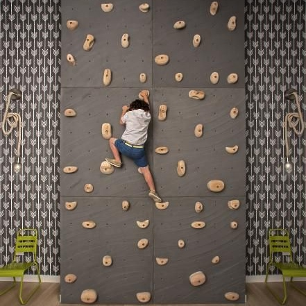

It is irreplaceable imitation of the rocky relief!
Bring the adventure of climbing into your home. Residential climbing walls let climbers scale the walls in their rec rooms, bedrooms and home gyms. There is a wide range of climbing walls avaliable from toddler-friendly to advanced; from natural rock-realistic to colorful and brigth. Start small with just hand holds on one or two climbing wall panels OR go big and cover one side of basement or indoor basketball court. You can even get really creative and use climbing panels to access a loft.
If you are interested in our products, we will happy to see you with your child in our School Climbing Everlast Climbing